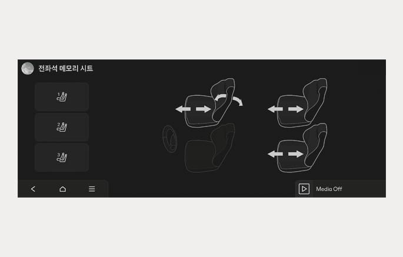

저장 방법

2C_AllSeatsMemory
인포테인먼트 시스템 화면에서 각 좌석의 위치를 저장할 수 있습니다.
-
안전을 위해 변속 레버를 'P'(주차)에 두고 시동 'ON' 상태를 유지하십시오.
-
인포테인먼트 시스템 홈 화면에서 시트 설정 버튼을 터치 하십시오.
-
메모리 시트 설정 화면에서 조절할 좌석(동승석, 뒷좌석)의 화살표를 눌러 각 좌석을 원하는 위치로 조절하십시오.
-
3개 모드 중 저장할 모드를 터치하십시오.
-
선택한 모드에 현재 상태가 저장됩니다.
전좌석 메모리 시트는 3개 까지만 저장할 수 있습니다.